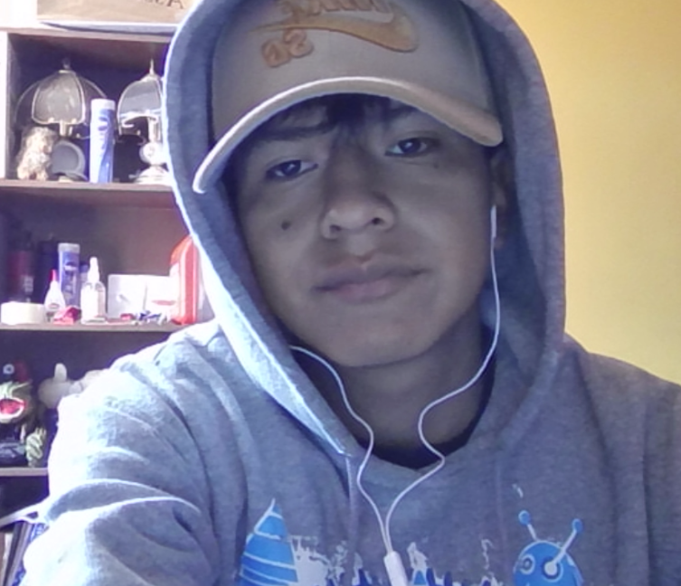

Nombre completo:joelchoque yujra
Edad:19 años
Carrera: Estudiante de Informática, 2do semestre
Institución: Universidad Mayor de San Andrés (UMSA)
Soy estudiante de segundo semestre de la carrera de Informática en la Universidad Mayor de San Andrés (UMSA). A lo largo de mis estudios, he comenzado a adquirir una base sólida en áreas clave de la informática, como la programación, las matemáticas aplicadas a la computación y los fundamentos de redes. Mi interés está orientado hacia el aprendizaje continuo y la exploración de diversas ramas de la informática, como el desarrollo de software, la inteligencia artificial y la ciberseguridad.
Durante mi tiempo en la universidad, he participado activamente en actividades académicas, como talleres y seminarios, que me han permitido expandir mis conocimientos y fortalecer mi red de contactos profesionales. Mi objetivo es continuar perfeccionando mis habilidades técnicas y contribuir al desarrollo de soluciones innovadoras en el campo de la tecnología.